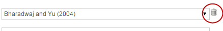

Citations
You use these commands to insert clickable links to citations.
Tell Me About
Reference Citations
Use this command to insert citations to previously added references. If you haven't added the reference using one of the Insert Reference commands, you can add it here.
To insert a reference
- Place your cursor at the insertion point.
- Click Insert Citation>Reference Citation.
- Select a citation from the drop-down list. You can select other citations from the drop-down lists. To remove a selected citation, click the trash icon next to it.

ArticleExpress displays the full citations in the dialog box.
- You can choose one of the following options:
- Narrative to insert the citation as a narrative in your text.
- Add Parentheses Around Citation. This option is already selected when you open the dialog. You may not select both options.
Inserting a Reference from the Insert Reference dialog box
You can insert a reference from the dialog box, using the Insert Reference form. You can choose Journal, Book, Edited Book, or Other as the types.
Complete the fields with as much information as you have. Fields are self-explanatory. Fields with an asterisk are required.
To insert a reference from the Insert Reference Citation dialog
- In the Insert Reference Citation dialog box, click Add a new reference to the list. ArticleExpress displays the Insert Reference form.
- Complete the form depending on the type you selected in the Form Entry dialog box drop-down. These are described below.
- When you have found your reference, click Insert Reference. ArticleExpress adds it to the reference list.
Journals
To check your reference, click PubMed Lookup. ArticleExpress connects to PubMed and searches for a match with your entry. If there is more than one match, use the PubMed Lookup dialog to choose the correct reference.
Click Insert Reference to insert the reference in your article.
Book/Edited Book
There are no special instructions for these entries.
Other
Other entries might include correspondence, websites, etc. You may add extra text boxes and URLs to the Other reference entries. You can click and drag some of the fields to move them to another location. ArticleExpress removes empty text and URL boxes before adding the reference.
Figure Citations
You can insert a citation to each figure in your article.
To insert a figure citation
- Place your cursor at the insertion point.
- Click Insert Citation>Figure Citation.
- Select the prefix to use from the drop-down menu..
- Type a figure number. Include S before the figure number for supplementary figures. ArticleExpress will not let you use a number for a figure that doesn't exit.
- If you want the citation in parentheses, select Add parentheses around citation.
- Click Insert Citation.
Table Citations
You can insert a citation to each table in your article.
To insert a table citation
- Place your cursor at the insertion point.
- Click Insert Citation>Table Citation.
- Select the prefix to use from the drop-down menu.
- Type a table number. ArticleExpress will not let you use a number for a table that doesn't exit.
- If you want the citation in parentheses, select Add parentheses around citation.
- Click Insert Citation.
Footnote Citations
You can insert a citation to a previously added footnote in your article.
To add a footnote citation
- Place your cursor at the insertion point.
- Click Insert Citation>Footnote Citation.
- Select a citation from the drop-down list. As you select a citation, ArticleExpress adds another drop-down list. You can continue adding additional footnote citations.
- Click Insert Citation. The citation or citations are inserted at the insertion point.
Equation Citations
You can insert a citation to each equation in your article.
To insert an equation citation
- Place your cursor at the insertion point.
- Click Insert Citation>Equation Citation.
- Select the prefix to use from the drop-down.
- Type an equation number. ArticleExpress will not let you use a number for an equation that doesn't exit.
- If you want the citation in parentheses, select Add parentheses around citation.
- Click Insert Citation.
Scheme Citations
You can insert a citation to each scheme in your article.
To insert a scheme citation
- Place your cursor at the insertion point.
- Click Insert Citation>Scheme Citation.
- Select the prefix to use from the drop-down.
- Type a scheme number. ArticleExpress will not let you use a number for a scheme that doesn't exit.
- If you want the citation in parentheses, select Add parentheses around citation.
- Click Insert Citation.
Citations.htm | Copyright © 2015 Dartmouth Journal Services All Rights Reserved.
{kind=link}
{kind=link}


{kind=link}
{kind=link}
{kind=link}
{kind=link}